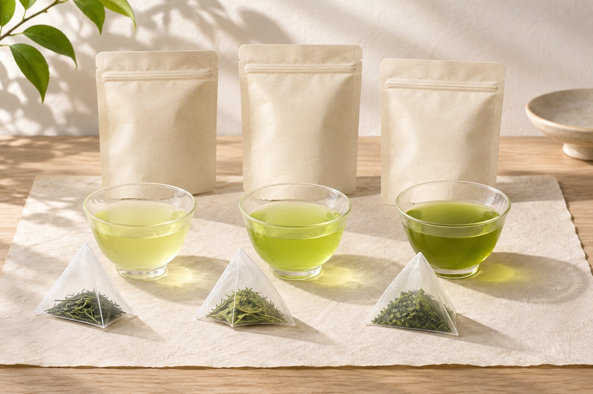
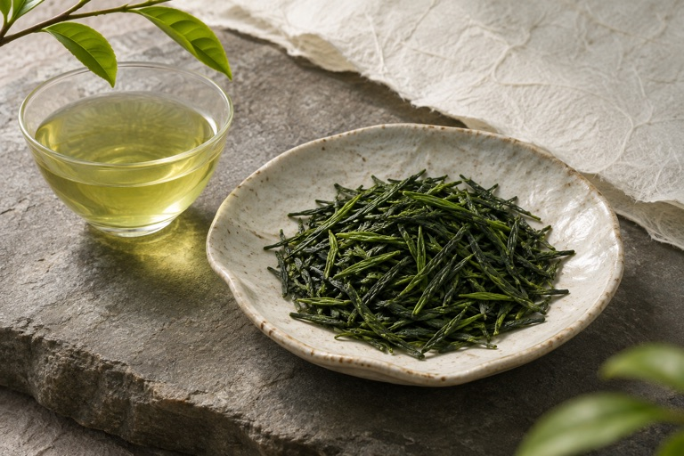
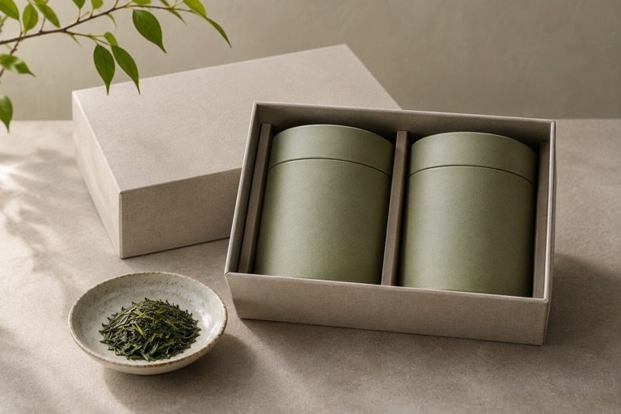
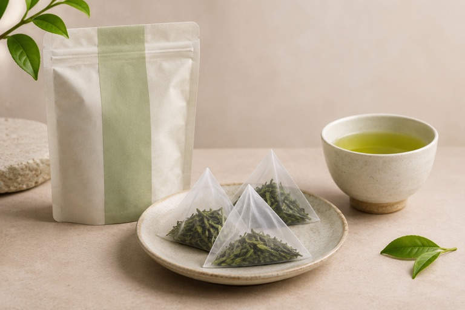
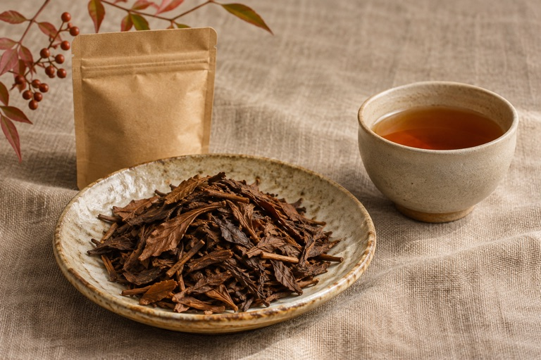

宇治 月野茶房
台灣・本期開團
網站示範 · 非正式開團
宇治茶包三款組
宇治玉露、宇治煎茶與碾茶。跟著台灣團主，一起認識 JA 全農京都的三款宇治茶。
本期團主 台北小林（示範團主）
- 團購價
- NT$980
- 報名截止 · 台灣時間
- 12/06（日）22:00
- 取貨方式
- 台北面交
已登記 18／30 組再 12 組達成門檻
我要跟團
用 LINE 邀朋友

本期團主
台北小林（示範團主）
想試試三種宇治茶，可以先泡煎茶，再比較玉露與碾茶。
宇治茶選品
品名來源：JA Town找不到符合的商品。
宇治抹茶「抹濃」30 g × 3
日文品名
宇治抹茶-抹濃- 30g×3個

頂級宇治玉露 50 g
日文品名
プレミアム宇治玉露 50g

兩款宇治茶（宇治之譽、京之香）各 100 g
日文品名
宇治茶2種セット(宇治の誉、京の香り 各100g)
三款宇治茶（山城之露、寶玉、優等煎茶）各 100 g
日文品名
宇治茶3種セット(山城の露、宝玉、優等煎茶 各100g)

碾茶茶包（4 g × 12 入）2 袋
日文品名
碾茶ティーバッグ(4g×12p) 2袋セット
碾茶茶包（4 g × 12 入）4 袋
日文品名
碾茶ティーバッグ(4g×12p) 4袋セット
兩款宇治茶禮盒（宇治之譽、京之香）各 80 g，紙罐
日文品名
宇治茶2種詰合せ(宇治の誉、京の香り 各80g 紙缶入り)
兩款宇治茶禮盒（宇治之譽、京之香）各 160 g，罐裝
日文品名
宇治茶2種詰合せ(宇治の誉、京の香り 各160g缶入り)
兩款宇治茶桐木禮盒（山城之露、優等煎茶）各 160 g，罐裝
日文品名
宇治茶2種詰合せ(山城の露、優等煎茶 各160g缶入り 桐箱)
三款宇治茶禮盒（福壽、玉露雁金、京之香）各 80 g，紙罐
日文品名
宇治茶3種詰合せ(福寿、玉露かりがね、京の香り 各80g 紙缶入り)

京番茶 500 g × 2 袋
日文品名
京番茶 500g×2本
京番茶 500 g × 3 袋
日文品名
京番茶 500g×3本
JA 京都山城 宇治瓶裝茶 500 mL × 24 瓶
日文品名
JA京都やましろ 宇治茶 ペットボトル 500ml×24本
從跟團到取貨
- 從團主的頁面報名
- 截止後確認是否成團，成團後通知付款
- 從日本集中出貨給台灣團主
- 依團主通知在台灣取貨
付款與未成團說明
成團後通知付款。若未成團，無須付款。